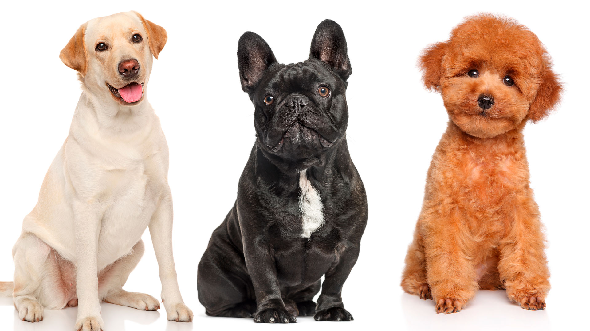

Las dos tenemos maascotas en nuetros hogares. Sofia tiene un perro llamdo Max que tiene 10 años, es blanco con manchas marrones. Celeste tiene dos perros, uno se llama Rocky, y el otro se llama Roma. Son de color negro y marrón.
